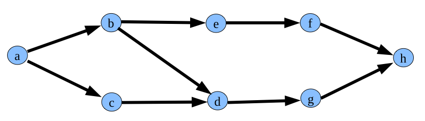

Artificial Intelligence - Chapter 3 with Java
MINES Saint-Etienne
Table of Contents
Introduction
The goal of this tutorial is to understand how to (i) model problems to solve and (ii) implement the search algorithms as described in AIMA. We take inspiration here from the algorithm provided by AIMA-Java Project. The slides containing the pseudocode are available here.
Assignment
The lab must be completed on March 25th, 2020. Archive your source code and files and send them to Gauthier Picard with subject [TBIA] Chapter 3 <your name>. The work will be marked.
Modeling problems
As to focus one the problem modeling and the implementation of search algorithm, we provide here some reusable code.
The Problem interface
The first important structure we use is the Problem interface. To define a particular problem to solve, you must implement this interface.
package fr.emse.ai.search.core; import java.util.Collection; public interface Problem { public Object getInitialState(); public boolean isGoal(Object state); public Collection<Object> getActions(Object state); public Object getNextState(Object state,Object action); public double getStepCost(Object start, Object action, Object dest); }
It must provide, by implementing different methods, the different components of a problem definition :
getInitialState: its initial state, that can be anyObjectinstance (i.e. anything),isGoal: a predicate to check ifthe goal is achieved,getActions: a function returning the list of actions (instances ofObject) for a given state (instance ofObject),getNextState: a function returning the state following another given state when performing a given action,getStepCost: a function returning the cost of transitting from a state to another performing a given action.
The Node class
The Node class is used by search algorithms to store the search state. A node points to a particular state of the search space. This state can be any Object subclass instance (String, Integer, etc.), as defined in the particular problem to solve.
package fr.emse.ai.search.core; import java.util.ArrayList; import java.util.List; public class Node { private Object state; private Node parent; private Object action; private double pathCost; public Node(Object state) { this.state = state; this.pathCost = 0.0; } public Node(Object state, Node parent, Object action, double stepCost) { this(state); this.parent = parent; this.action = action; this.pathCost = parent.pathCost + stepCost; } public Object getState() { return state; } public Node getParent() { return parent; } public Object getAction() { return action; } public double getPathCost() { return pathCost; } public boolean isRootNode() { return parent == null; } public List<Node> getPathFromRoot() { List<Node> path = new ArrayList<Node>(); Node current = this; while (!current.isRootNode()) { path.add(0, current); current = current.getParent(); } // ensure the root node is added path.add(0, current); return path; } public String toString() { return "[parent=" + parent + ", action=" + action + ", state=" + getState() + ", pathCost=" + pathCost + "]"; } public String pathToString() { String s = ""; List<Node> nodes = getPathFromRoot(); for (int i = 0; i < nodes.size(); i++) { System.out.println("Action : " + nodes.get(i).getAction()); System.out.println("State : " + nodes.get(i).getState()); } return s; } }
Example of problem modeling
As to make things concrete, here is an example of problem modeling.
We want to model the following problem: find a path from a to h.

Figure 1: Simple graph
We first define our State model: simple String. Each state is a simple String. We especially take care of redefining the equals methods that will be used later, e.g. to check if the goal is reached.
package fr.emse.ai.search.simple; public class SimpleState { public final static String A = "A"; public final static String B = "B"; public final static String C = "C"; public final static String D = "D"; public final static String E = "E"; public final static String F = "F"; public final static String G = "G"; public final static String H = "H"; public String value; public SimpleState(String value) { this.value = value; } public boolean equals(Object o) { if (o instanceof SimpleState) { return ((SimpleState) o).value.equals(this.value); } return false; } public String toString() { return value; } }
Then, we can simply implement the Problem interface while keeping the graph in mind. Look at the implementation of each method, especially how to define actions and next states. Here we fix a simple unit cost for each move.
package fr.emse.ai.search.simple; import fr.emse.ai.search.core.Problem; import java.util.ArrayList; import java.util.Collection; public class SimpleOrientedGraphProblem implements Problem { SimpleState initialState = new SimpleState(SimpleState.A); SimpleState finalState = new SimpleState(SimpleState.H); @Override public Object getInitialState() { return initialState; } @Override public boolean isGoal(Object state) { return state.equals(finalState); } @Override public Collection<Object> getActions(Object state) { ArrayList<Object> actions = new ArrayList<Object>(); String s = ((SimpleState) state).value; if (s.equals(SimpleState.A)) { actions.add("go to B"); actions.add("go to C"); } else if (s.equals(SimpleState.B)) { actions.add("go to D"); actions.add("go to E"); } else if (s.equals(SimpleState.C)) { actions.add("go to D"); } else if (s.equals(SimpleState.D)) { actions.add("go to G"); } else if (s.equals(SimpleState.E)) { actions.add("go to F"); } else if (s.equals(SimpleState.F)) { actions.add("go to H"); } else if (s.equals(SimpleState.G)) { actions.add("go to H"); } else if (s.equals(SimpleState.H)) { } return actions; } @Override public Object getNextState(Object state, Object action) { if (action.equals("go to A")) return new SimpleState(SimpleState.A); if (action.equals("go to B")) return new SimpleState(SimpleState.B); if (action.equals("go to C")) return new SimpleState(SimpleState.C); if (action.equals("go to D")) return new SimpleState(SimpleState.D); if (action.equals("go to E")) return new SimpleState(SimpleState.E); if (action.equals("go to F")) return new SimpleState(SimpleState.F); if (action.equals("go to G")) return new SimpleState(SimpleState.G); if (action.equals("go to H")) return new SimpleState(SimpleState.H); return null; } @Override public double getStepCost(Object start, Object action, Object dest) { return 1; } }
Solving problems
Now we have seen how to model problems, we need to define a class to solve these problems. As we have seen in class, there are minaly two search algorithm families: Tree search and Graph search.
The AbstractTreeSearch abstract class
We provide here the code for a Tree search algorithm. It is abstract, since as we have seen in class, several solvers can be implemented using these skeleton: breadth-frist, depth-first, etc. To do so one must implement the initFrontier and chooseLeafNode methods. They will differ for solver to solver. The core of the solving algorithm is coded in the solve method which returns a Node (containing the path to the destination) given a specific Problem instance (e.g. an instance of SimpleOrientedGraphProblem). This method is a direct translation of the pseudo-code found in AIMA chapter 3.
package fr.emse.ai.search.core; import java.util.ArrayList; import java.util.Collection; public abstract class AbstractTreeSearch implements Search { Collection<Node> frontier; public Node solve(Problem problem) { System.out.println("Solving..."); frontier = initFrontier(); frontier.addAll(expand(new Node(problem.getInitialState()), problem)); System.out.println("Starting frontier is " + frontier); boolean done = false; Node solution = null; while (!done) { if (frontier.isEmpty()) { System.out.println("No more nodes in frontier => FAILURE"); done = true; } else { Node node = chooseLeafNode(frontier, problem); System.out.println("Inspecting node " + node); if (problem.isGoal(node.getState())) { System.out.println("Goal node reached => SUCCESS"); solution = node; done = true; } else { frontier.addAll(expand(node, problem)); System.out.printf("Expanding node, frontier is " + frontier); } } } return solution; } public Collection<Node> expand(Node node, Problem problem) { Collection<Node> nodes = new ArrayList<Node>(); Collection<Object> actions = problem.getActions(node.getState()); for (Object action : actions) { Object next = problem.getNextState(node.getState(), action); nodes.add(new Node(next, node, action, problem.getStepCost(node.getState(), action, next))); } return nodes; } public abstract Collection<Node> initFrontier(); public abstract Node chooseLeafNode(Collection<Node> frontier, Problem problem); }
The next step is thus to implement a specific solver. Let's implement a depth-first solver. To do so, we have to implement the two abstract methods of our AbstractTreeSearch. As said in class, the data structure on which depth-first relies is a stack, and the next node to be chosen is the top of the stack. So, defining a depth-first is as simple as that:
package fr.emse.ai.search.solver; import fr.emse.ai.search.core.AbstractTreeSearch; import fr.emse.ai.search.core.Node; import fr.emse.ai.search.core.Problem; import java.util.Collection; import java.util.Stack; public class DepthFirstTreeSearch extends AbstractTreeSearch { public Collection<Node> initFrontier() { return new Stack<Node>(); } public Node chooseLeafNode(Collection<Node> frontier, Problem problem) { return ((Stack<Node>) frontier).pop(); } }
Let's now put all those things together, by solving our simplem problem in a main program:
package fr.emse.ai.search.simple; import fr.emse.ai.search.solver.DepthFirstTreeSearch; public class SimpleTest { public static void main(String[] args) { SimpleOrientedGraphProblem p1 = new SimpleOrientedGraphProblem(); System.out.println("Solution to problem using depth first : "); System.out.println(new DepthFirstTreeSearch().solve(p1).pathToString()); } }
We are now ready to work!
Exercises: coding solvers
Exercise 1
Download the java source code here. Import the classes and interfaces in your development environment. Run the simple test. What happens?
Exercise 2
By taking inspiration from DepthFirstTreeSearch, code a breadth-first search algorithm. Run it on the simple problem. What happens?
Exercise 3
Now let's consider the graph is not directed. Code the new problem. Run your two solvers. What happens?
Exercise 4
Obviously our algorithms are looping indefinitely. AIMA book is our bible: the solution is to implement a graph search.
By taking inspiration from AbstractTreeSearch, code the AbstractGraphSearch abstract class and then a depth-first and a breadth-first graph search algorithms.
Run your new solvers on the simple problem. What happens?
Exercises: modeling problems
Exercise 5
Model and compare your solvers on the following problem:
The farmer wants to get his goat, wolf and cabbage to the other side of the river. His boat isn't very big and it can only carry him and either his goat, his wolf or his cabbage. Now…..if he leaves the goat alone with the cabbage, the goat will gobble up the cabbage. If he leaves the wolf alone with the goat, the wolf will gobble up the goat. When the farmer is present, the goat and cabbage are safe from being gobbled up by their predators.
How does the farmer manage to get everything safely to the other side of the river?
Exercise 6
Model and compare your solvers on the following problem:
On one bank of a river are three missionaries and three cannibals. There is one boat available that can hold up to two people and that they would like to use to cross the river. If the cannibals ever outnumber the missionaries on either of the river’s banks, the missionaries will get eaten.
How can the boat be used to safely carry all the missionaries and cannibals across the river?
Exercise 7
Model and compare your solvers on the following problem:
You have 2 cans A and B, each containing a quantity of liquid (initial situation). You can do the following as many times as you wish, and in the order you want:
- empty a container to the river,
- transfer the liquid from a canister in the other to empty the first or second fill.
How to move from an initial situation at a given final position?
For example, you can test your program on the following cases:
- Can A has a capacity of 15, and can B has a capacity of 5,
- initial situation: A contains 12 and B contains 3,
- final situation: A contains 0 and B contains 5.